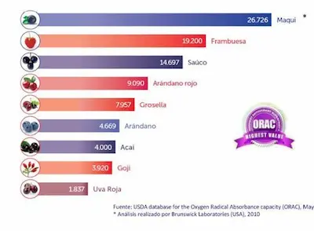

Antioxidantes: Los Verdaderos Superhéroes de tu Dieta
Qué son los antioxidantes y cómo protegen tu cuerpo
Los antioxidantes son compuestos esenciales que actúan como escudos protectores de nuestras células, neutralizando los radicales libres, moléculas inestables que se producen naturalmente en el cuerpo como resultado del metabolismo normal, pero que también aumentan por factores externos como la contaminación, el estrés, el tabaquismo o la exposición excesiva al sol. Estos radicales libres son peligrosos porque dañan las estructuras celulares, incluyendo el ADN, las membranas celulares y las proteínas, lo que acelera el envejecimiento y contribuye al desarrollo de enfermedades crónicas como cáncer, diabetes, problemas cardiovasculares y trastornos neurodegenerativos. El cuerpo produce algunos antioxidantes de forma natural (como el glutatión), pero depende en gran medida de los obtenidos a través de la alimentación para mantener un equilibrio saludable y prevenir el estrés oxidativo.
La acción de los antioxidantes es comparable a un sistema de defensa altamente organizado: trabajan en diferentes frentes para proteger el organismo. Algunos, como la vitamina C y E, actúan directamente donando electrones para estabilizar los radicales libres. Otros, como los polifenoles y los carotenoides, activan enzimas antioxidantes propias del cuerpo o quelan metales pesados que podrían promover la formación de radicales libres. Esta red de protección es tan compleja que diferentes antioxidantes se especializan en proteger distintas partes de la célula: los carotenoides protegen las membranas lipídicas, la vitamina C trabaja en el ambiente acuoso de la célula, y el glutatión opera dentro de las mitocondrias. Esta diversidad explica por qué necesitamos consumir una amplia variedad de antioxidantes a través de múltiples fuentes alimenticias para una protección celular completa.
Fuentes sorprendentemente ricas
Cuando pensamos en antioxidantes, inmediatamente nos vienen a la mente frutas como los arándanos o las granadas, pero la realidad es que muchos alimentos cotidianos superan ampliamente su contenido antioxidante. Las especias, por ejemplo, son auténticos concentrados de estos compuestos beneficiosos: el clavo de olor, la canela y el orégano seco tienen una capacidad antioxidante hasta 50 veces mayor que muchas frutas frescas. El chocolate negro con alto contenido de cacao (mínimo 70%) es otra fuente excepcional, gracias a su riqueza en flavonoides como la epicatequina, que no solo combaten el estrés oxidativo sino que también mejoran la función vascular y reducen la presión arterial. Incluso el café, consumido con moderación, aporta una cantidad significativa de ácidos clorogénicos, potentes antioxidantes que protegen el hígado y pueden reducir el riesgo de diabetes tipo 2.
Las legumbres, especialmente los frijoles negros y rojos, son otra fuente infravalorada de antioxidantes. Contienen antocianinas (los mismos pigmentos que dan color a los arándanos) además de otros fitoquímicos como las saponinas y los fitatos, que tienen efectos anticancerígenos demostrados. Las nueces pecán y las nueces de Brasil destacan por su alto contenido en selenio y vitamina E, mientras que las alcachofas y las espinacas son verduras particularmente ricas en ácido alfa-lipoico y luteína, antioxidantes que protegen específicamente la visión y la salud cerebral. Esta variedad de fuentes demuestra que una dieta equilibrada y diversa puede proporcionar todos los antioxidantes necesarios sin necesidad de recurrir a productos exóticos o costosos.
Combinaciones que potencian sus efectos
La forma en que combinamos los alimentos puede multiplicar exponencialmente la absorción y eficacia de los antioxidantes. Un ejemplo clásico es la vitamina C (presente en cítricos, pimientos y kiwi) que regenera la vitamina E (en frutos secos y semillas) después de que esta neutraliza radicales libres, permitiéndole seguir actuando. Las grasas saludables como el aceite de oliva virgen extra aumentan hasta 4 veces la absorción de carotenoides de vegetales como zanahorias, espinacas o tomates. Por eso, aliñar una ensalada con limón (vitamina C) y aceite de oliva no solo mejora su sabor, sino que optimiza la biodisponibilidad de sus nutrientes.
Otras combinaciones poderosas incluyen el té verde con limón (los cítricos aumentan la absorción de las catequinas del té), o el brócoli con mostaza (la mirosinasa de la mostaza activa el sulforafano del brócoli, un potente anticancerígeno). Incluso las hierbas y especias pueden potenciar los efectos: el romero y el tomillo contienen ácido rosmarínico, que protege los antioxidantes de otros alimentos durante la cocción. Estas interacciones demuestran que la nutrición es una ciencia de relaciones, donde el todo es mucho más que la suma de sus partes, y que pequeños ajustes en nuestra forma de combinar alimentos pueden tener grandes impactos en nuestra salud.
Mitos y verdades sobre su consumo
Existe la creencia errónea de que cuantos más antioxidantes consumamos, mejor, pero la realidad es más matizada. Estudios han demostrado que megadosis de antioxidantes aislados (como suplementos de vitamina E o betacaroteno) pueden tener efectos paradójicos y actuar como pro-oxidantes en ciertas circunstancias. La naturaleza inteligente de los alimentos enteros proporciona antioxidantes en las proporciones y combinaciones óptimas que nuestro cuerpo reconoce y sabe utilizar. Otro mito común es que todos los métodos de cocción destruyen antioxidantes; mientras que herver vegetales puede hacer que algunos se pierdan en el agua, otros como el licopeno de los tomates o los carotenoides de las zanahorias se hacen más biodisponibles con la cocción, especialmente cuando se cocinan con grasas saludables.
Para integrar más antioxidantes en tu rutina, comienza por añadir color a tu plato: cada pigmento en frutas y vegetales representa diferentes familias de antioxidantes. Prioriza alimentos de temporada y maduros (contienen más antioxidantes), almacénalos adecuadamente (muchos son sensibles a la luz y el aire), y varía tus métodos de cocción. Pequeños cambios como cambiar el café tostado oscuro por uno tostado medio (conserva más ácidos clorogénicos), optar por chocolate negro en lugar de leche, o añadir hierbas frescas a tus platos pueden aumentar significativamente tu ingesta antioxidante sin esfuerzo. Recuerda que los antioxidantes trabajan mejor en el contexto de un estilo de vida saludable: su eficacia aumenta cuando se combinan con ejercicio regular, hidratación adecuada y manejo del estrés.